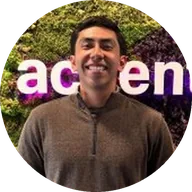
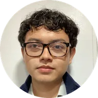
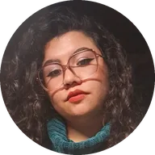

Equipo
Proyecto de IETI en la Escuela Colombiana de Ingeniería Julio Garavito, 2026.

Andersson David Sánchez Méndez
QA & Data/ML Lead
Cristian Santiago Pedraza Rodríguez
Backend Developer

David Santiago Villadiego Médicis
Data Scientist
David Stiven Sarria Arcila
Product & Business Strategy
Juan Esteban Lozano Cárdenas
UX/UI & Wireframes

Raquel Iveth Selma Ayala
Documentation & QA